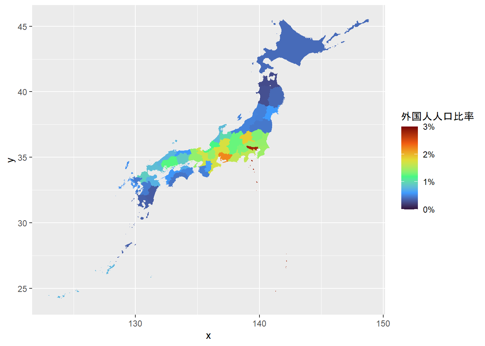
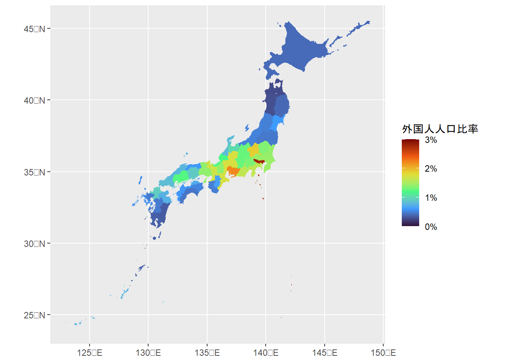
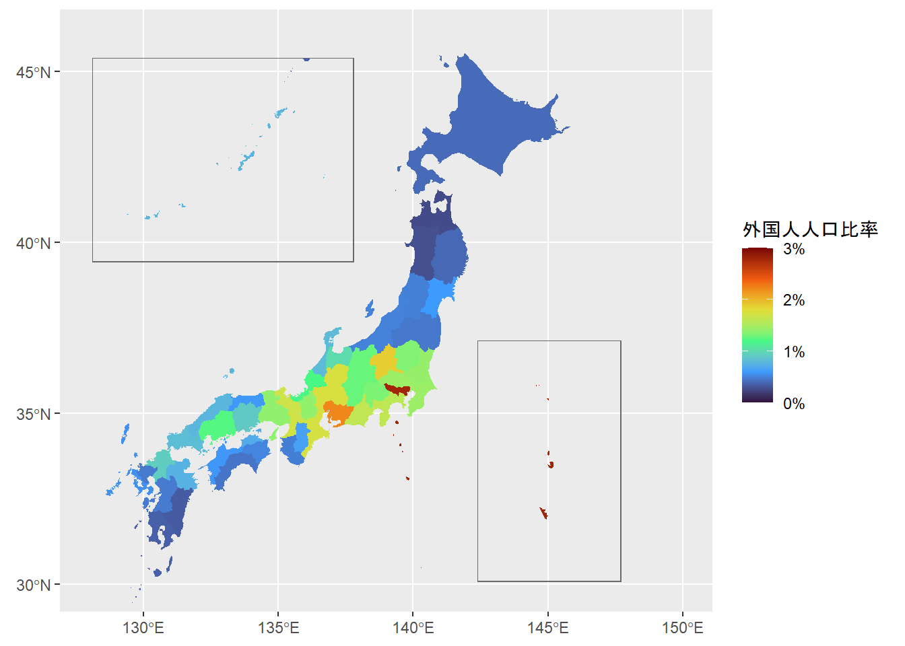

パッケージの読み込み
library(tidyverse)2022年6月11日
2024年4月27日
Rでは，ggplot2などのパッケージを利用するだけで，都道府県別の日本地図を描くことができます．ここでは，日本地図をggplot2で描画する方法をいくつか紹介します．
ここでは，こちらからダウンロードできる社会・人口統計体系の2015年の都道府県別外国人人口比率データ（10万人あたり外国人人口）を地図描画用のサンプルデータとしました．
library(jpstat)
library(arrow)
foreigner_ratio_2015 <- estat(statsDataId = "https://www.e-stat.go.jp/en/dbview?sid=0000010201",
lang = "E")
foreigner_ratio_2015 <- foreigner_ratio_2015 |>
activate(tab) |>
select() |>
activate(cat01) |>
# Ratio of population of foreigners (per 100,000 persons)
filter(code == "#A01601") |>
select() |>
activate(area) |>
filter(name != "All Japan") |>
select(code, name) |>
rekey("pref") |>
activate(time) |>
filter(name == "2015") |>
select()
foreigner_ratio_2015 <- foreigner_ratio_2015 |>
collect("foreigners_per_100K")
write_parquet(foreigner_ratio_2015, "foreigner_ratio_2015.parquet")library(arrow)
foreigner_ratio_2015 <- read_parquet("foreigner_ratio_2015.parquet") |>
mutate(pref_code = pref_code |>
str_extract("^\\d{2}") |>
parse_integer(),
pref_name = pref_name |>
str_remove("-.+$"),
pref_name = case_when(pref_name == "Gumma" ~ "Gunma",
TRUE ~ pref_name),
foreigner_ratio = parse_number(foreigners_per_100K) / 1e5,
.keep = "unused")geom_map() で日本地図を描くggplot2でmap_data() やgeom_map() を使って世界の国々の地図を描画することができます．これには，あらかじめmapsパッケージとmapdataパッケージをダウンロードしておく必要があります（mapdataパッケージに日本地図が格納されています）．
map_data("japan") とすることで，mapsパッケージの地図データがデータフレームに変換されます．このデータフレームのregion 列が都道府県のIDとなるため，aes(map_id = region)を設定した上で，geom_map() することで，描画したいデータのregion 列と都道府県ジオメトリがリンクします．
ただし，map_data("japan") は，以下の点に注意が必要です．
あらかじめlibrary(mapdata) を実行してください（実行しないとデータが読み込めないようです）
region 列はすべてアルファベット表記である
他の都道府県と異なり奈良県だけがNARA と大文字表記になっているなど元データにやや問題があるようです（今回はstr_to_title()で修正しました）
また，日本地図全体を表示するためには，expand_limits() などで軸を設定すること必要になります．
# pak::pak("maps")
# pak::pak("mapdata")
library(tidyverse)
library(mapdata)
map_data_japan <- map_data("japan") |>
as_tibble() |>
mutate(region = str_to_title(region))
head(map_data_japan)ggplot(foreigner_ratio_2015 |>
rename(region = pref_name),
aes(map_id = region)) +
geom_map(aes(fill = foreigner_ratio),
map = map_data_japan) +
expand_limits(x = map_data_japan$long,
y = map_data_japan$lat) +
scale_fill_viridis_c("外国人人口比率",
limits = c(0, 0.03),
labels = scales::label_percent(),
option = "turbo")
ggplot2のgeom_sf()を使えばsfパッケージのジオメトリを簡単に描画できます．
sfパッケージのst_as_sf() を使えば，maps・mapdataパッケージの提供する地図データをsfオブジェクトに変換することができます．日本地図データをsfに変換することで，先ほどのコードよりも直感的に地図を描くことができます．
library(sf)
map_japan <- maps::map("japan",
plot = FALSE,
fill = TRUE) |>
st_as_sf() |>
rename(pref_name = ID) |>
mutate(pref_name = str_to_title(pref_name))
map_japan |>
left_join(foreigner_ratio_2015,
by = join_by(pref_name)) |>
ggplot(aes(fill = foreigner_ratio)) +
geom_sf(color = "transparent") +
scale_fill_viridis_c("外国人人口比率",
limits = c(0, 0.03),
labels = scales::label_percent(),
option = "turbo")
世界地図のデータを取得可能なパッケージにはrnaturalearthパッケージもあります．
都道府県別地図を取得するにはrnaturalearthのne_states("japan") を実行します．ne_states("japan") の出力には英語の都道府県名に加えて日本語の都道府県名も含まれており便利です．
日本地図の描画では，日本列島を大きく描画するために琉球諸島や小笠原諸島を地図上の左上や右下に配置したいケースがあります．ggplot2で作成した日本地図のレイアウトを簡単に行えるようにjpmapを作成しました．
jpmapは，以下の機能を持っています．
琉球諸島・小笠原諸島を再配置したレイアウトを可能にするjpmap::layout_japan()
ただし再配置される琉球諸島・小笠原諸島の縮尺は厳密ではありませんのでご注意ください
ryukyu = FALSEやogasawara = FALSE を指定することで琉球諸島・小笠原諸島を非表示にすることが可能です
日本語の都道府県名や都道府県コードが含む都道府県データを提供するjpmap::prefecture（rnaturalearthのデータがベースです）
pref_name）がHokkaidoではなくHokkaidōといった表記なっているためご注意ください．jpmap::layout_japan() で地図のレイアウトを変更することで，都道府県ごとの傾向がよりわかりやすくなります．
plot <- jpmap::prefecture |>
left_join(foreigner_ratio_2015 |>
select(!pref_name),
by = join_by(pref_code)) |>
ggplot(aes(fill = foreigner_ratio)) +
geom_sf(color = "transparent") +
scale_fill_viridis_c("外国人人口比率",
limits = c(0, 0.03),
labels = scales::label_percent(),
option = "turbo")
jpmap::layout_japan(plot)
2015年の都道府県別外国人人口比率に関する日本地図から以下のことがわかりました．
2015年ではどの都道府県でも外国人人口比率が3％以下である
東京都は外国人人口比率が最も多く，愛知県や群馬県なども外国人口比率が高い．
ここまで，ggplot2などのパッケージを活用した日本地図の描画を試してみました．
その結果，Rを使えば，自前でデータを整備しなくても，簡単に日本地図を描けることがわかりました．みなさんもぜひ，ggplot2を使って，色々な地図を使ってみてください！